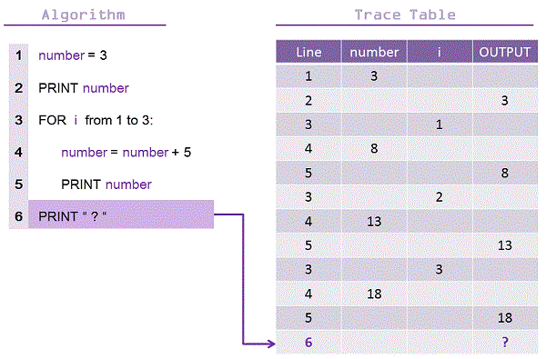

Iteration basically means prepitition, it's used to save rewriting code and designing algorithms quicker and simpler. They are showed by functions for, until and while.
Trace Tables
Trace tables are a method of predicting input and outpur of a programme. Here is an example below \/

While Loops
Used to repeat something a number of times, with or without a definite end (see indefinite loops below)
Loops
Indefinite Loops
A indefinite loop is used when you know how many loops there will be, use the word "while"
Definite Loops
A definite loop is used when you know how many loops there will be, use the word "for"
Infinite Loops
Operators
While and do difference
The only difference between do while and do until is that the first one loops as long as the condition is true, while the second one loops as long as the condition is false.
Use the ! operator to negate the condition to get the same functionality as until.